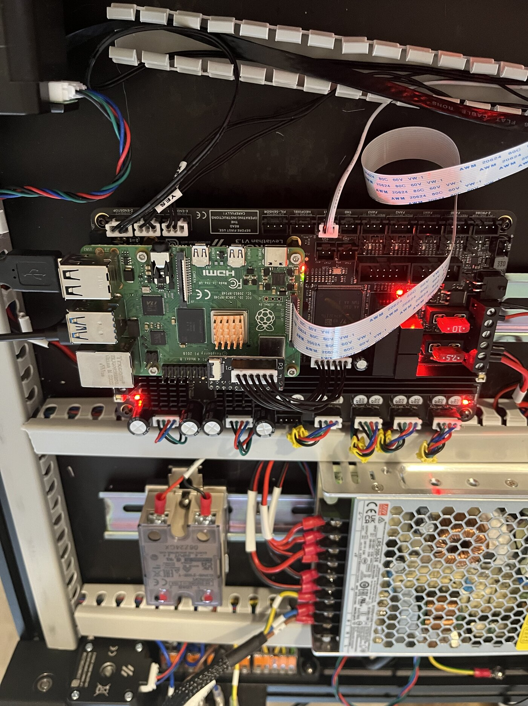
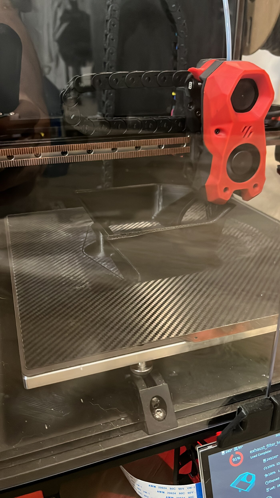
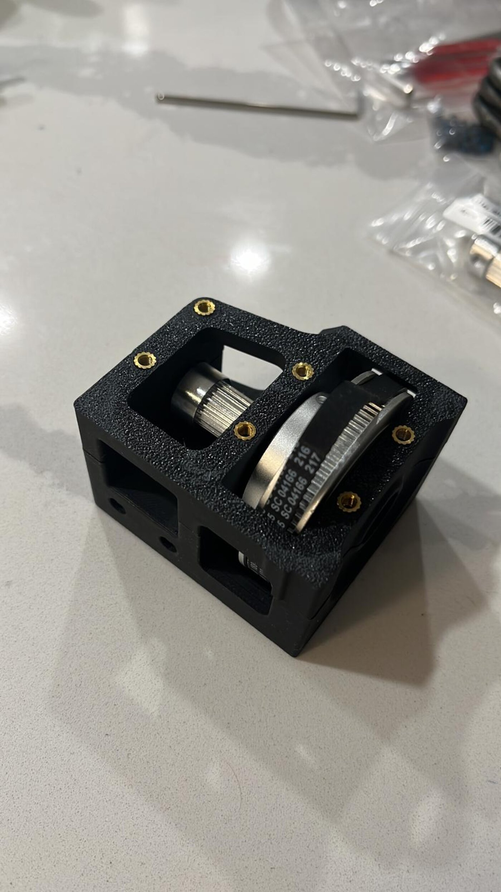
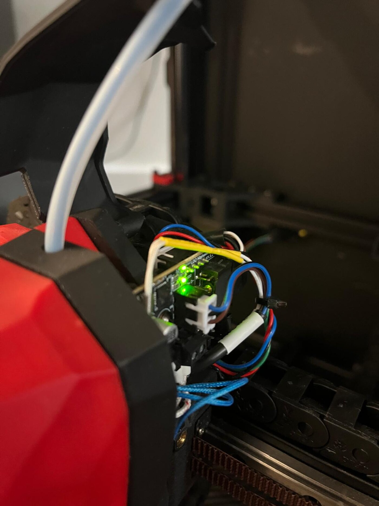
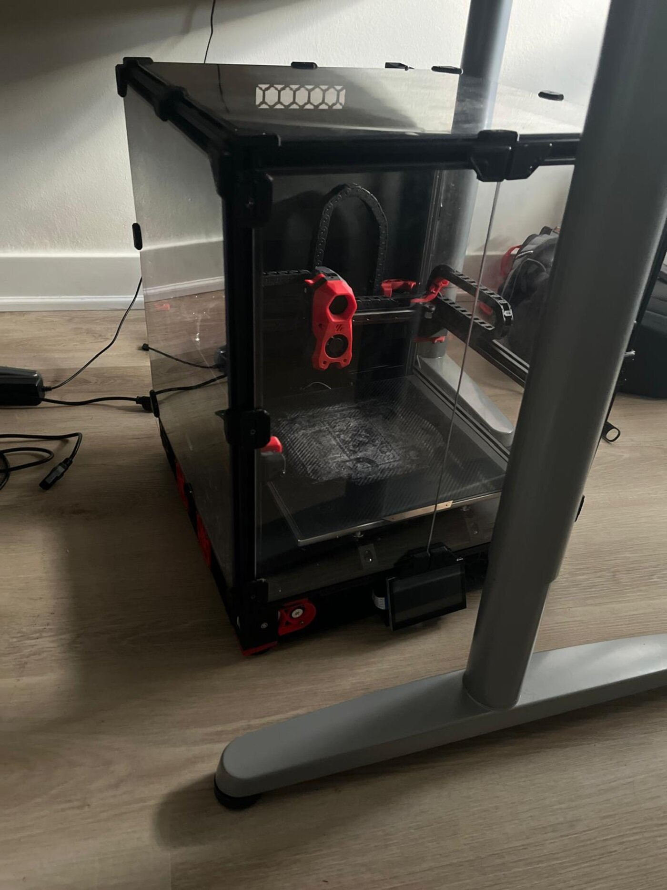

1.Build
Building a Voron 2.4 from parts covers frame squaring, belt tensioning, the four-motor flying-gantry kinematics, wiring-harness design, and configuration of the Klipper firmware for the specific hardware. Homing is sensorless: instead of physical endstops, the stepper drivers detect a stall (StallGuard) at the end of travel, which removes the endstop switches and their wiring but requires the driver current and sensitivity to be tuned.





2.Print pipeline
Prints are prepared and sent by a set of scripts rather than through the slicer GUI, so every print uses the same validated settings and the same checks. The pipeline has four stages: slice, post-process, upload, and monitor.
-
Slice.
slice_part.shruns the OrcaSlicer command-line interface headlessly. It arranges the STL files, merges a shared machine configuration with the tuned PLA profile, and exposes a small set of parameters (nozzle temperature, layer heights, walls, infill, brim, z-hop, supports) with defaults validated on real prints: 210 °C nozzle, 0.20 mm first layer, 0.2 mm z-hop, and travel moves routed inside the walls. -
Post-process. Two scripts edit the sliced G-code.
bed_stepdown.pyholds the bed at 70 °C for the first three layers and then drops it to 60 °C with a non-blocking command, because the slicer only distinguishes first-layer and other-layer bed temperatures.sensor_guard.pydisables the filament motion sensor through the slow first layers and re-enables it at layer 6. At crawl speeds the sensor's encoder produces too few pulses and reports false jams. -
Upload.
print_send.shuploads through the Moonraker HTTP API and only starts a print after an explicit confirmation. Copying the file into the printer's G-code directory and starting immediately races Moonraker's in-place file processing and aborted a print with "Unable to parse move", so the API is the only upload path. -
Monitor.
print_watch.shpolls printer state, temperatures, and layer progress, and exits with a distinct code for each terminal condition (complete, host unreachable, firmware halt, error, cancelled, paused, thermal fault, stall). It does not cancel a print itself.
Heating is owned by the printer's PRINT_START macro, which
holds the nozzle at a 60 °C standby during homing and gantry
levelling, soaks the bed, and brings the nozzle to print temperature only
at the purge line. Heating the nozzle to full temperature earlier causes
it to ooze throughout levelling. Both the slice and upload stages reject
any G-code that contains its own heat-and-wait commands
(M109/M190).
Two first-layer defects were traced through this pipeline. Restart lines
lifting off the bed followed the toolpath rather than bed position,
which pointed to the slicer settings rather than bed levelling; reducing
the first-layer height from 0.25 to 0.20 mm and the z-hop from 0.6
to 0.2 mm resolved it. Separately, a z_offset of
0.1 mm in the shared slicer configuration had been raising every
first layer from 0.25 to 0.35 mm; it is now fixed at zero as an
invariant of the pipeline.
3.Use in other projects
Parts printed on this machine for other projects include:
- the ESP-DIVE submarine's 3D-printed hull,
- enclosures for the kickbox strike pods,
- mounts and structural parts for the drone builds, including the Rinnegan hardware target.
Having the printer in-house shortens each design iteration from CAD change to physical part.